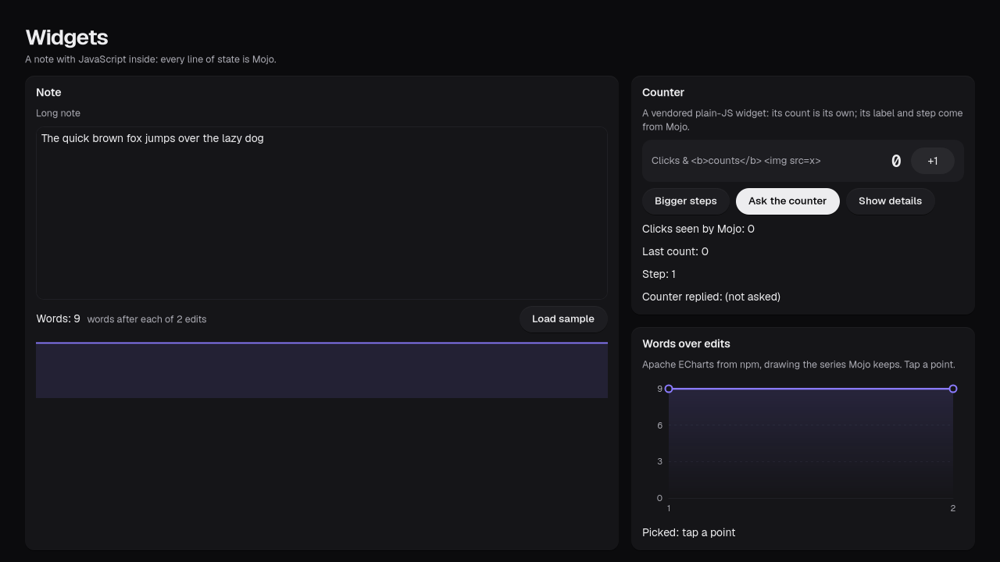
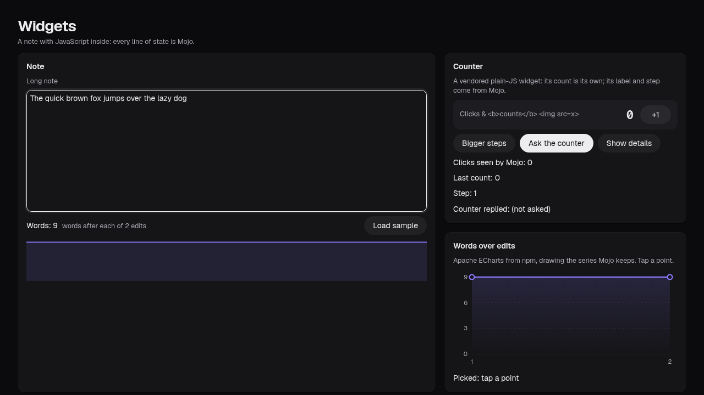
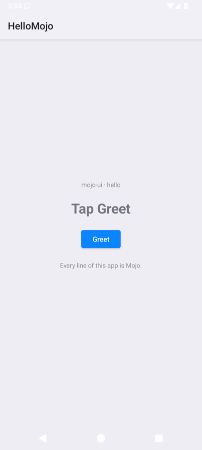

omxcode · the framework Public alpha
Write it once. Open it everywhere.
An app framework for Mojo. You write two functions, view() and update(), and the app opens natively on Linux, the web, Android and Mac. The GPU code sits in the same file, and every app is already a set of tools an AI agent can call.





Real screenshots: the widgets example on GTK, the web and one of GitHub's Macs; hello on the Android emulator; the Data Lens on GTK.